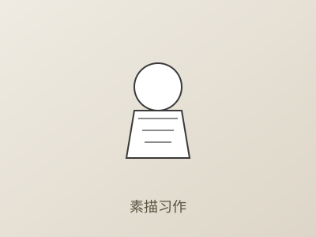
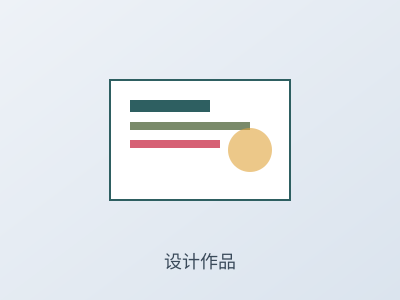
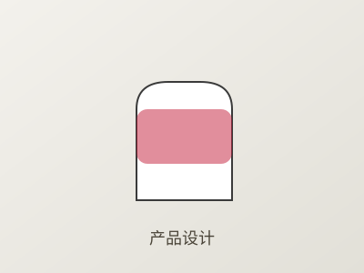

人物素描习作
82
分
丹青有AI


支持 JPG、PNG、WEBP 格式，单张不超过 20MB
建议使用高清原图以获得更精准诊断
当前作品明暗交界线偏软，缺乏明确的形体转折。建议加强颧骨、下颌骨等关键转折处的对比，增强体积感。
依据：面部明暗对比度 0.42，低于建议值 0.55
画面重心略微偏右，可通过增加左侧背景层次或微调主体位置来达到更好的视觉平衡。
依据：视觉重心坐标 (0.56, 0.48)，偏离中心 6%
部分轮廓线过于均匀，可尝试虚实结合，让近实远虚的线条变化增强空间纵深感。
依据：边缘线变化指数 0.31，建议提升至 0.45

海报设计基础课程
色彩理论与应用
每次诊断自动保存到历史记录
每周一发送学习进展摘要
关闭非必要动效，提升可访问性
使用深色主题保护视力